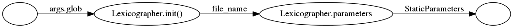
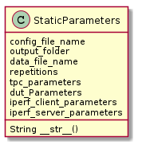
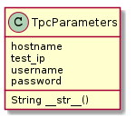
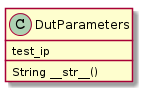
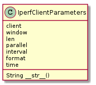
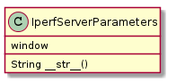

The Lexicographer generates StaticParameter objects from it’s parameters attribute.


The attributes of the StaticParameters that have the suffix parameters are themselves parameter objects.
The following parameters are meant for information about the Traffic PC (TPC) and the Device Under Test (DUT).

The hostname is meant to be the IP address or resolvable name used to connect to the TPC (likely on the control network). While the test_ip is used by the iperf commands. Since this is downlink only, the test_ip is never actually used, but that didn’t occur to me until after I set it up.

The following parameters are meant for building a traffic-to-the-dut test.

